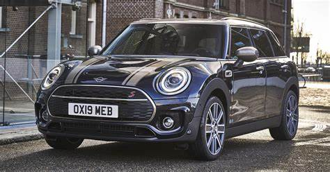

About Me
My name is Dennis Macharia. I'm an APT student in USIU. I'm 23 years old and I love anything to do with cars and racing.
I love the Mini Cooper Clubman.
My Favorite Car
The Clubman F54 features a distinctive design with its extended body, split rear doors, and increased cabin space, making it more suitable for families or those needing extra storage.
- Engine Type - Number of Cylinders:
- Inline 3
- Fuel Type:
- Petrol
- Fuel System:
- Direct Injection
- Engine Alignment:
- Transverse
- Engine Position:
- Front
- Engine Displacement:
- 1499 cm³ / 91.5 cu-in
- Bore x Stroke:
- 82.0 x 94.6 mm (3.23 x 3.72 inches)
- Number of Valves:
- 12 Valves
- Aspiration:
- Turbo + Intercooler
- Compression Ratio:
- 11.0
- Horsepower:
- 136 PS / 134 HP / 100 kW @ 4500-6000 rpm
- Maximum Torque:
- 230 Nm / 169 lb-ft @ 1250-4000 rpm
- Drive Wheels - Traction - Drivetrain:
- FWD
- Transmission Gearbox - Number of Speeds:
- 6-speed Manual